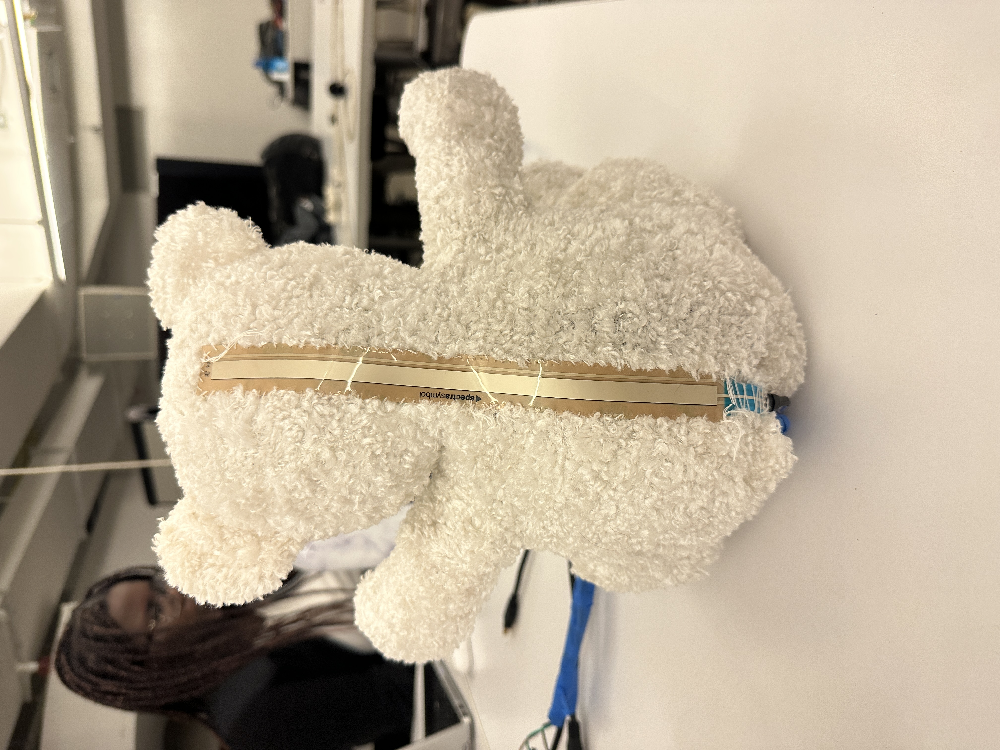

Bearatone
An instrument for your inner child.
Overview & Inspiration
The Bearatone is a fun whimsical instrument. Made from a teddy bear outfitted with sensors, it's meant to be a amusing interface to engage with music. The Bearatone was created as my final project for Northwestern University's Digital Musical Instrument Design course in Spring 2023.
Earlier this quarter, I read excerpts from The Infinite Playground, by Bernie DeKoven. The author writes about the importance of exercising your imagination, and I realized that I hadn't thought of being imaginative in a long time. The Bearatone is designed to inspire the kind of imagination we had when playing with stuffed animals as kids.
Anatomy of a Bearatone

Features
The Bearatone can play up to 2 notes at once. One note is the fundamental, with pitch controlled by the softpot, and the other note is variable and can be controlled using the FSRs, photoresistor, and push button.
Volume
The two arms control the volumes of the two notes. When the left arm is raised, the volume of the fundamental increases, and when the right arm is raised, the volume of the variable note increases.
Fundamental Pitch
The funamental pitch is controlled by the soft pot.
Variable Pitch
Each of the remaining 4 sensors (2 FSRS, photoresistor, and push button) are treated like a switch. When a sensor is "activated" (FSR pressed, photoresitor covered, push button pressed), the state of the switch is flipped. Each sensor is mapped to 2 intervals against the fundamental (one for each state). When a switch is flipped, the corresponding interval is activated and the pitch of the variable note changes.
Playing and Writing for the Bearatone
Because of the unique pitch control for the variable pitch, the Bearatone is a highly idiomatic instrument to compose for. The main constraint is that once a switch is flipped to the "on" interval, and then another switch is activated, the "off" note of the first switch needs to be activated before the "on" note of the second switch can be played again. Because of this constraint, composers should be careful in their writing, or design a pitch mapping along with each piece to ensure that the mappings are ergonomic.
Process and Construction
First I obtained a sacrificial teddy bear.
The bear was cut open and the stuffing removed so that it could be outfitted with sensors.

Sensors were hot glued or taped to the bear. The FSRs and bend sensors are within the stuffed animal, while the photoresitor and button have parts both inside and outside the bear.
The circuits were soldered into a PCB.
The PCB was connected to the sensors and placed inside the teddy bear. Sensor inputs, power, and ground were wired out in a central "umbilical" bundle of wires.
The teddy bear was sewn up and the soft pot was sewn onto the back of the teddy bear. The sensors, power and ground were connected to the Arduino (which is external to the bear).

Demo
Code & Resources
Arduino and Max Code as well as the pdf score for the demo performance can be found on Github here.
Circuit Diagram